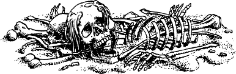

11
Warily you explore this narrow tunnel, and as you advance deeper into the darkness, you detect the sickly aroma of mould and decay. Bones crunch beneath your boots and the walls become thickly coated with a pallid grey moss. At length you are brought to a halt when the passage arrives at a dead end. You examine the mossy wall ahead, and your tracking skills help you to uncover a loose brick that conceals a length of rotting cord. You tug this cord and it triggers a hidden counterweight that causes the whole wall to revolve on a central hinge. Squeezing through the narrow gap, you enter a dark chamber that lies beyond. A few moments later, you hear the cogs of the counterweight resetting. Then the secret panel revolves about its hinge and locks behind you.
{kind=link}

Using your infravision, you scan your surroundings and discover that you have entered a hall that is flanked on either side by a row of human skeletons. They stand at attention with their spines pressed against the stone wall, and clasped in their bony hands are rusty polearms of differing type and origin. At the far end of this hall, you can see a pair of stout wooden doors reinforced with strips of polished steel. Cautiously you advance under the sightless gaze of the flanking skeletons, and upon reaching the doors you discover that they are secured by a combination lock. A single dial with a brass pointer is mounted upon a circular plate that is numbered 0 to 200 around its bevelled edge. You place the palm of your hand against the door, and a tingle of excitement runs down your spine when you sense that Lone Wolf is being held captive on the other side of these doors.
With the help of your Kai Sixth Sense, you determine that the number which will open the combination lock is the same as the solution to the following puzzle.
If A=1, B=2, C=3 (and so on through the alphabet until you reach Z=26), what is the total numerical value of the fortress of ‘Gazad Helkona’?
When you think that you have calculated the total, turn to the section of this book that is the same as your answer. 4
If you calculate incorrectly, or if you are unable to answer this puzzle, turn instead to 183.
Footnotes
[4] The section corresponding to the correct answer will have a footnote confirming that it is indeed correct.